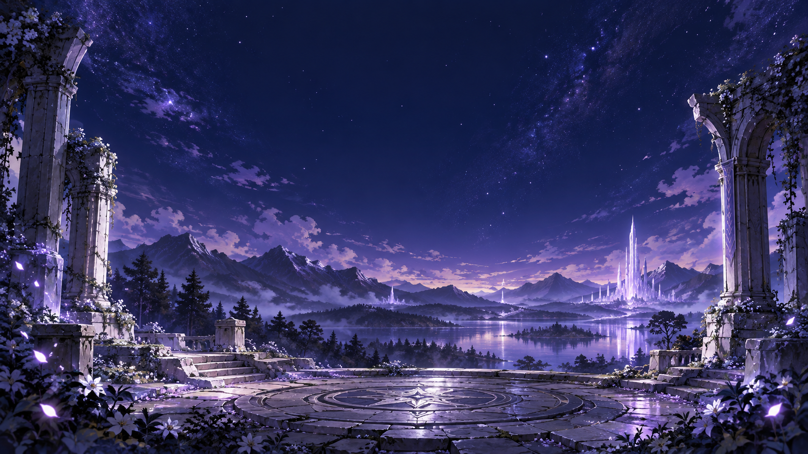

서로 다른 출발
고원 성채, 고대 숲, 호숫가 초원, 달빛 주거지. 같은 중세 판타지 세계의 다른 장소에서 각자의 이야기가 흐르고 있습니다.
FOUR CLASSES. ONE STORY.
서로 다른 네 개의 길이 만나,
하나의 새로운 이야기가 시작된다.
YOUR STORY BEGINS HERE
FANTASY VIRTUAL IDOL · RELICA
게임 속 파티가 현실의 아이돌이 되다.
전사, 궁수, 마법사, 암살자.
네 개의 클래스가 네 개의 목소리로 만나는 순간.
MEET YOUR PARTY
길을 여는 아렌, 새로운 가능성을 찾는 엘리아, 조용히 마음을 살피는 셀렌, 순간을 놓치지 않는 누아르.
THE FIRST JOURNEY
같은 중세 판타지 세계의 서로 다른 지역.
각자의 일상을 보내던 네 사람은 어느 날 같은 빛을 발견합니다. 서로 다른 곳에서 시작된 길은 고대 성소의 중앙 마력석 앞에서 이어집니다.
YOUR NEXT CHAPTER
THE RELICA ARCHIVE / 01
RELICA는 RPG 파티의 전사·궁수·마법사·암살자를
여성 4인조 판타지 버추얼 아이돌로 재해석한 프로젝트입니다.
A PARTY BECOMES A VOICE
RELICA의 네 사람은 각자의 전투 역할뿐 아니라 성격, 보컬, 퍼포먼스와 심볼까지 하나의 흐름으로 이어집니다. 서로 다른 성향은 경쟁보다 보완의 관계를 만듭니다.
판타지와 신비로움, 모험과 새로운 시작. 네 사람이 함께 전하는 이야기는 서정적이고 희망적인 방향을 향합니다.
PROLOGUE / THE FIRST JOURNEY
고원 성채, 고대 숲, 호숫가 초원, 달빛 주거지. 같은 중세 판타지 세계의 다른 장소에서 각자의 이야기가 흐르고 있습니다.
각자의 장소에서 같은 빛 또는 신호를 발견한 네 사람. 길 위에서 서로의 흔적을 느끼며 같은 하늘과 목적지를 바라봅니다.
원형 고대 광장의 중앙 마력석 앞, 네 사람이 처음 마주합니다. 각자의 상징이 RELICA의 문장으로 이어지고, 처음으로 같은 방향을 향해 걷습니다.

ANCIENT SANCTUARY
함께 걷기 시작한 순간,
RELICA의 이야기가 시작됩니다.
FOUR CLASSES / FOUR VOICES
BETTER TOGETHER
정면에서 파티를 지키는 아렌과 필요한 순간에 조용히 개입하는 누아르.
감각과 행동을 따르는 엘리아, 지식과 분석으로 가능성을 읽는 셀렌.
길의 중심을 잡는 아렌과 새로운 길에서 즐거움을 발견하는 엘리아.
설명하고 분석하는 셀렌과 작은 변화까지 관찰하는 누아르.
MUSIC & PERFORMANCE
서로 다른 길을 걷던 네 사람이 만나, 함께 새로운 여정을 시작하는 이야기. 〈첫 여정〉은 바람과 빛, 만남과 새로운 길을 노래하는 데뷔곡 기획입니다.
따뜻한 중저음, 맑고 투명한 보컬, 섬세한 고음, 낮고 절제된 멜로딕 랩. 스트링과 피아노, 부드러운 신스가 네 사람의 화음으로 이어집니다.
네 사람을 만났다면, 이제 당신과 닮은 멤버를 찾아보세요.
FIND YOUR PARTY
낯선 길 앞에서, 소중한 사람 곁에서.
당신의 선택과 닮은 RELICA 멤버를 만나보세요.
8개의 선택 · 약 2분 · 정답은 없습니다
멤버의 성격 설정을 바탕으로 만든 가벼운 취향 테스트입니다.
RELICA DEFENSE
멤버를 선택하고 고유한 공격으로 다가오는 적을 막아보세요.
공용 강화와 멤버별 전용 강화로 나만의 전투를 만들어보세요.
자동 발사 · 자동/수동 조준 전환 버튼 · 수동 모드에서 마우스 이동 또는 터치로 방향 지정 · 레벨업 때 공용·전용 강화 중 하나 선택
스테이지를 클리어하면 계속하기 또는 그만하기를 선택합니다. 무한 모드는 중단 버튼으로 결과를 확인할 수 있습니다. 메뉴 이동과 로그인 창에서는 일시정지합니다. 스크롤 중에는 계속 진행하며, 최소화·다른 탭에서 실행이 늦어진 시간은 복귀 후 나누어 반영합니다. 강화 선택이나 스테이지 대기에서는 멈춥니다. 브라우저 종료·탭 폐기·새로고침 뒤에는 진행 중 전투를 복원하지 않습니다.
방어벽은 스테이지 30·무한 50으로 시작하고 적 1마리당 1의 피해를 받습니다. 스테이지 클리어 시 5를 회복하며 스테이지 상한은 30입니다. 몬스터 처치 경험치는 최대 체력에 비례하고 경험치 강화 배율도 적용됩니다. 스테이지 사이에는 강화를 유지합니다. 종료하면 레벨과 강화가 초기화됩니다. 점수는 처치 수 × 100이며, 기본 검기 범위는 이전의 2배입니다. 효과음은 소리 버튼으로 켜고 끌 수 있습니다. 처음에는 꺼져 있으며 선택은 이 브라우저에 저장됩니다. 캐릭터는 멤버 기준 시트를 참고한 SD 픽셀 이미지입니다. 배경은 제공해 주신 레퍼런스를 바탕으로 만든 멤버별 픽셀 아트이며, 멤버 선택에 따라 바뀝니다. 아렌 앞 가로 3칸은 기본 피해 100%, 이후 화면 끝까지 50%로 감소합니다. 연속 검기는 1발 100%, 2발 각 85%, 3발 각 70%이며 최대 2회 강화입니다. 경험치 강화는 단계당 +10%, 최대 +50%입니다. 나머지 수치는 조정 가능한 초안입니다. 최고 기록은 현재 브라우저에 저장됩니다.